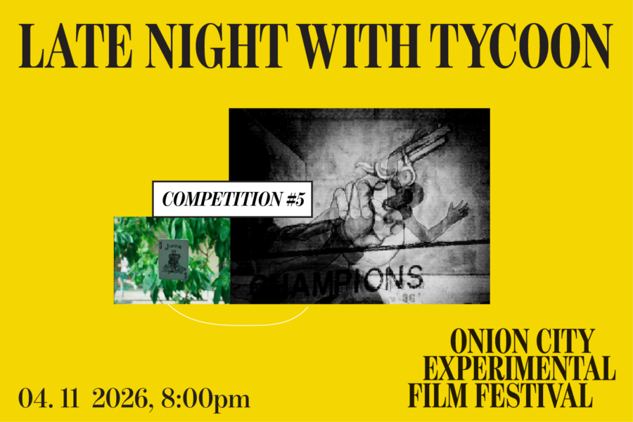

Onion City: Late Night With Tycoon
In her feature directorial debut, TYCOON (2025), Charlotte Zhang remixes low-budget filmmaking techniques to reimagine a dystopian Los Angeles in the near future, seen through the eyes of two wandering youths. The program opens with DIRTY EYE (2025) by Keng U Lao, a journey through the illusionistic city of Macau—the Las Vegas of the East—blurred by sleights of hand. Charlotte Zhang will be in attendance for Q&A with Chicago film programmer Joshua Minsoo Kim of Tone Glow.
Lineup: 掩眼法 Dirty Eye | Keng U Lao | Macao | 2025 | 14 min | Chicago Festival Premiere
Tycoon | Charlotte Zhang | Canada/US | 2026 | 89 min | Chicago Festival Premiere